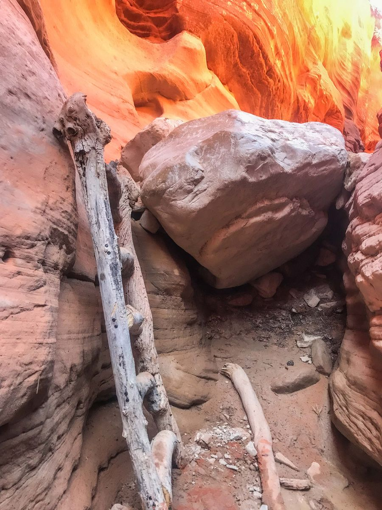

Check the weather for the whole area that drains into the canyon, not the sky above the trailhead. If rain is forecast anywhere in that area, or fell there in the past day, stay out of the narrows. For a long canyon with no way out, such as Buckskin Gulch, the rule has no exceptions: a storm 50 miles away, out of sight from the trailhead, can send a flood through under a blue sky 8 to 12 hours later.
Where does a flash flood come from?
A flash flood in a slot canyon doesn't come from the rain on your head. It comes from every drop that fell on the land that drains to that canyon. That land is called the catchment, or the watershed. Rain on a big catchment keeps arriving for hours after it fell, from places you can't see. Rain on a small catchment arrives fast and is then over.
We measured the catchments of three slot canyons near Kanab and Page from the USGS elevation model, and added the Paria River for scale. Size decides almost everything.
| Canyon | Catchment | Can you see it all? | Rain to canyon |
|---|---|---|---|
| Peekaboo Slot Canyon, Kanab | 4.7 square miles | Yes, from the drive in | About 1 hour |
| Upper Antelope Canyon, Page | 86 square miles | No. The headwaters are 16 miles beyond the rim | About 5 hours |
| Buckskin Gulch at Wire Pass | 410 square miles | No. Most of it lies behind Buckskin Mountain | 8 to 10 hours |
| Paria River at Lees Ferry | 1,411 square miles | No | 7 to 9 hours from the upper gauge, 18 to 22 hours from the far headwaters |
How do I check a canyon before I go in?
- Find the catchment on a map. Follow a topographic map uphill from the canyon until you reach the divide, the high ground beyond which water drains the other way. Everything inside that line counts. For Buckskin Gulch it reaches the rim of Bryce Canyon to the north and the Kaibab Plateau to the south and west.
- Get a forecast for the catchment, not for the nearest town. Use the National Weather Service point forecast for several spots across it. For Buckskin Gulch we use four: Wire Pass Trailhead, the Bryce Canyon rim, the White Cliffs and the Kaibab Plateau.
- Look back 24 hours. Water takes time to travel. Flash floods here tend to move at 4 to 6 miles an hour, so an evening storm at the head of the Buckskin catchment, more than 50 miles upstream, may not reach the narrows until 8 to 12 hours later. Check yesterday's radar, not only today's forecast.
- Read the flash flood rating. The National Weather Service publishes a daily flash flood potential rating for southern Utah. Our office watches it from the morning on, along with radar and the forecast models.
- For the Paria and Buckskin, check the gauges. The Paria and Buckskin flood monitor shows both USGS river gauges and the rain forecast for the basin on one free page.
- Talk to someone local about conditions. A clean forecast says nothing about the mud and cold pools a recent flood left behind. Ask a ranger or a guide service.
Don't try to work out how much rain is too much.
If you are analyzing likely rainfall amounts to make a go or no-go decision, you are already past a reasonable margin of safety. A half inch of rain can be enough for a deadly, overhead flood in a slot. If rain is in the forecast, do not go into Buckskin Gulch.
What does a 20 percent chance of rain mean for a canyon?
It sounds tame. It means a small chance that you'll be standing where the rain hits. Some corner of the desert is probably about to get soaked, and nobody can say which one. One canyon is torn apart while the next one over never feels the shadow of a cloud. The percentage also tells you nothing about how much rain is expected, and in monsoon season that can be a downpour that triggers a flood.
When is flash flood season?
Most floods come with the summer monsoon, roughly July through September. Storms build in the late morning or at midday and let go in the early afternoon. The forecast can tell you that storms will form. It can't tell you where they will hit.
Floods also come outside that pattern, at any time of day or year.
- Fall. October 2021 brought several floods to our area. Peekaboo Slot Canyon ran overnight while Kanab slept, and guides found rearranged boulders, mud and pools the next morning.
- Winter. Crystal Rapid in the Grand Canyon was created in December 1966, when a 40-foot wall of water and boulders came down Crystal Creek. An ice dam can also break upstream and send a cold rush of water down a frozen or dry drainage.
- Spring. Buckskin Gulch can flood without rain. Snowpack in the high country of the Grand Staircase plus a fast warm-up sends meltwater down the canyon.
For Buckskin Gulch the best odds of a safe, dry window are late April through late June and late September through November. Weather patterns have been shifting, so check every time and keep a backup plan.
Why is Buckskin Gulch so much more dangerous than other slots?
Three things combine.
- Length with no way out. The narrows run for about 14 miles without a break. Estimates range from 12 to 16 miles, because GPS is unreliable in canyons. Some corridor stretches run for miles with no ledge to climb onto. Flood debris shows that the danger zone easily reaches 30 to 40 feet above the floor.
- A catchment nobody can see. At the Wire Pass junction the gulch already collects rain from 410 square miles, and no stream gauge reads any of it. Rain on the Kaibab Plateau is a Buckskin flood six to ten hours later.
- An easy trailhead. In good conditions a passenger car can reach Wire Pass, the walk in is easy, and a steady line of hikers makes the canyon look safe. There's no safety in numbers. No ranger closes the trail and no gate shuts ahead of a flood.
The Middle Route, about halfway through, is a planned exit that needs scrambling. It isn't an escape. It helps only if the flood catches you right there.
Hikers died in flash floods in Buckskin Gulch in early 2023. The flood in March of that year came from a rainstorm on the Kaibab Plateau.

Is a small canyon safe?
No. Small is not the same as safe. Peekaboo Slot Canyon floods, and in 2021 a flood left a five-foot step in the middle of the canyon that we now climb with a ladder.
What a small catchment gives you is a decision a trained person can make from evidence in front of them. All of Peekaboo's 4.7 square miles is in view on the drive in, the lag from rain to flood is about an hour, and the first half of the canyon has easy ways out. That's why our guides sometimes take guests into Peekaboo on a rainy day and never into Buckskin.
The limit is what the eye can read. A monsoon storm is a tower of cloud you can watch build. On a day of steady, region-wide rain, the heavy core that floods a wash can hide inside the gray. On those days we decide from radar and rain totals instead of the view, and we say no sooner.
What are the warning signs inside a canyon?
- A rush of wind heading down the canyon.
- A roar like a freight train.
- The front of a flood is mud and debris, sticks and logs. It doesn't look like water.
Your only safety is higher ground, at once. As you walk, keep noting every place where you could climb out or up. The closest exit may be behind you. It takes only a few dozen yards without one for a flood to turn deadly.
What about washes and roads?
A slot canyon is a river bed, wet or dry. So is a wash. Learn to spot one: a bare, sandy strip with no plants, steep banks, stranded logs, or piles of debris that mark the last high water.
- Don't park or camp in a wash, even with no rain expected.
- Don't drive through flowing water. One of our guides stopped at a flood across House Rock Valley Road in October 2021, after 2.7 inches of rain fell in a short time. A minivan drove past her into the flow and was swept downstream. The people inside were unharmed.
- Keep back from the edge of a running wash. Floods swell to several times their size quickly, and banks collapse.
Being late is better than the alternative.
Does a permit mean the canyon is safe?
No. Seven canyoneers died in Keyhole Canyon in Zion National Park in September 2015, on the day their permits were issued and after they were warned about flood potential. Your safety isn't guaranteed because you hold a permit or stand in a park. The decision to enter is yours.
Scarce overnight permits tempt people into marginal weather. Buckskin Gulch has been there for about 5 million years and will be there next season. It is not worth dying for.
What does Dreamland do?
- Buckskin Gulch: we cancel or reroute every Buckskin tour when rain is in the forecast for the window of the tour. There's no field call and no second look. We'd rather lose the booking.
- Peekaboo: the office watches the radar, and on a maybe day the guide drives up, reads the sky over the catchment and decides. Nobody in the office second-guesses a guide who turned a group around.
- Paria Canyon backpacks: we choose dates with a low likelihood of monsoon storms, and move the trip to a backup route if the forecast turns.
- Before a Buckskin trip with any rain possible, one of our guides gets up at 3am to check the radar across the whole drainage, because most radar sites show only the past couple of hours.
Not sure about a canyon? Call us.
We'll give you our best advice on local terrain and conditions, even if you don't plan to hire us. (801) 251-6036.
Where this comes from
- Sunny Stroeer, Assessing flash flood potential in Buckskin Gulch: a technical primer, July 7, 2023, updated October 28, 2025.
- Dreamland Safari Tours, Peekaboo Slot Canyon in the Rain: Why We Sometimes Go, and Never Run Buckskin Gulch, October 28, 2026 (catchment measurements and travel times).
- Dreamland Safari Tours, Shock and awe: Flash floods in the desert, February 15, 2022.
- Dreamland Safari Tours, How to Hike in the Rain in Southern Utah, November 22, 2026.